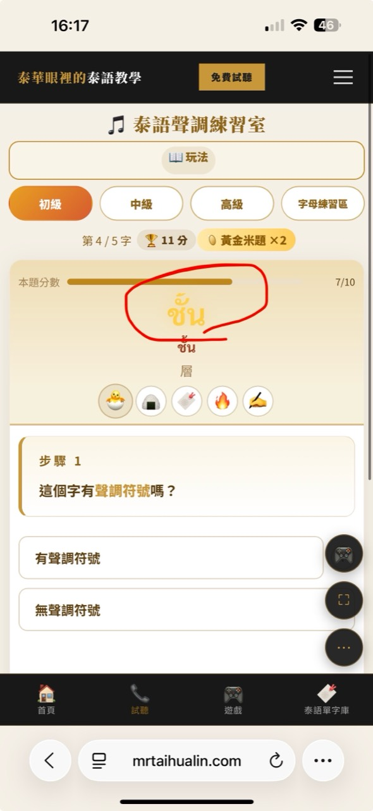
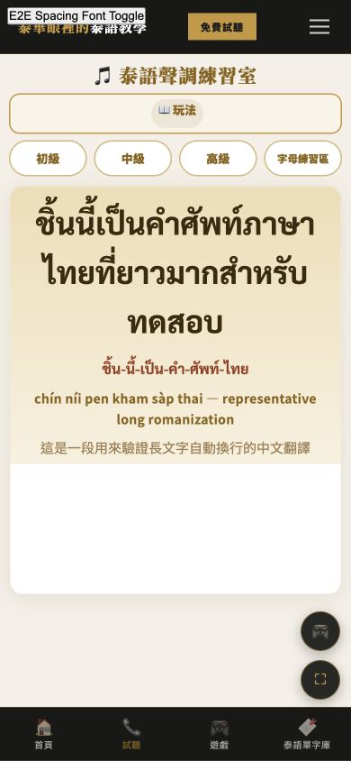

Preview only · Source SHA fc7803479d7402421f8ee0a81aa6e7283c255a01 · Production ยังไม่เปลี่ยน
ตรวจ 3 เรื่องเท่านั้น: การ์ด 字母練習區 บน Desktop +15%, font Standard/Modern ภายในการ์ดทั้ง Desktop/Mobile, และระยะคำศัพท์ในเกมเปิดใช้งาน Tone/Reading/Typing/Word Order ทั้ง Desktop/Mobile.


Excluded and unchanged: Lego lower gameplay, Listening, score system, Auth, data, and Production. Human PASS is required before any merge or Production action.